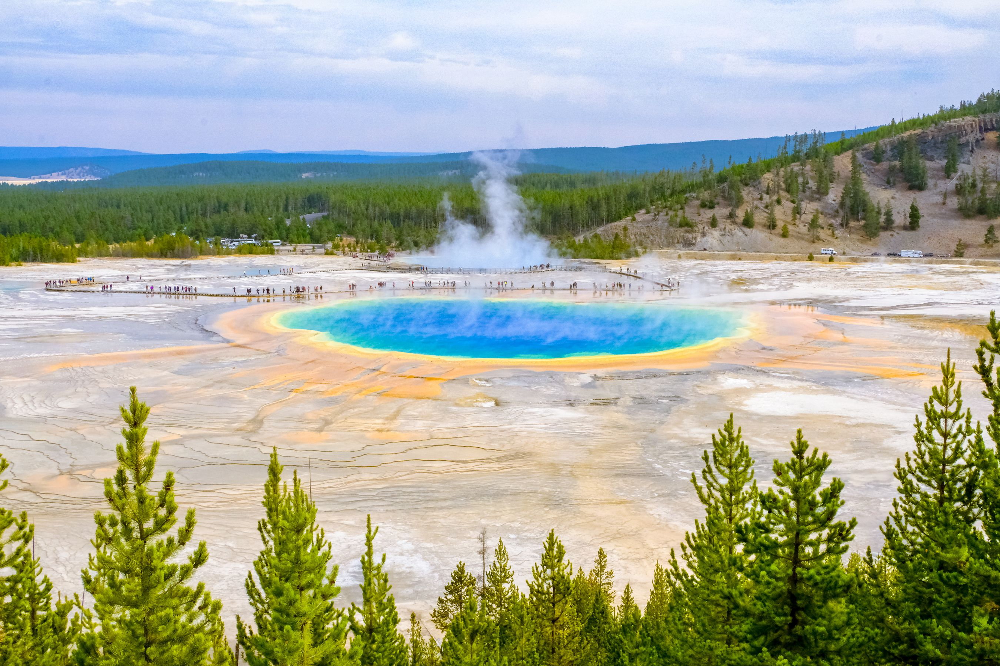

Best Places to Visit
Yellowstone National Park
Covering 2.2 million acres, Yellowstone is a natural gem. Geothermal wonders, diverse ecosystems, and iconic geysers like Old Faithful. Dont miss the Vibrant colours
of the Grand Prismatic Spring

Quebec City, Canada
A charming blend of European architecture and Canadian hospitality. Explore the historic Old Town, walk along cobblestone streets,
and savor French-inspired cuisine.
Chichen Itza, Mexico
Step back in time at this ancient Mayan city. The iconic El Castillo pyramid stands tall, and the site is rich in history and culture.

Samana, Dominican Republic
A hidden gem with pristine beaches, lush rainforests, and vibrant local culture. Take a whale-watching tour or relax on secluded shores.